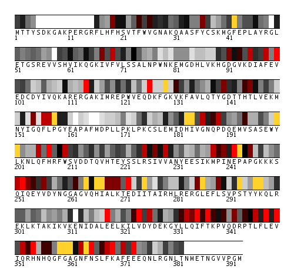

The residues are ranked according to the conservation score, and binned into 5% bins. The bins are colored according to the legend. Note that if 30% or more positions are conserved, the topmost bins will be empty, and the resulting map will be black-and-white.
Downloadables:
- per-residue score in xls (spreadsheet) format
- pymol session file
- the whole work directory (folder)
|
Conservation map: positions 1 to 393  |